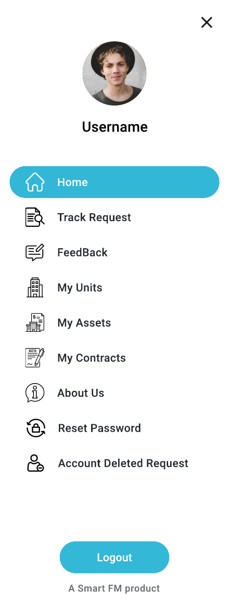
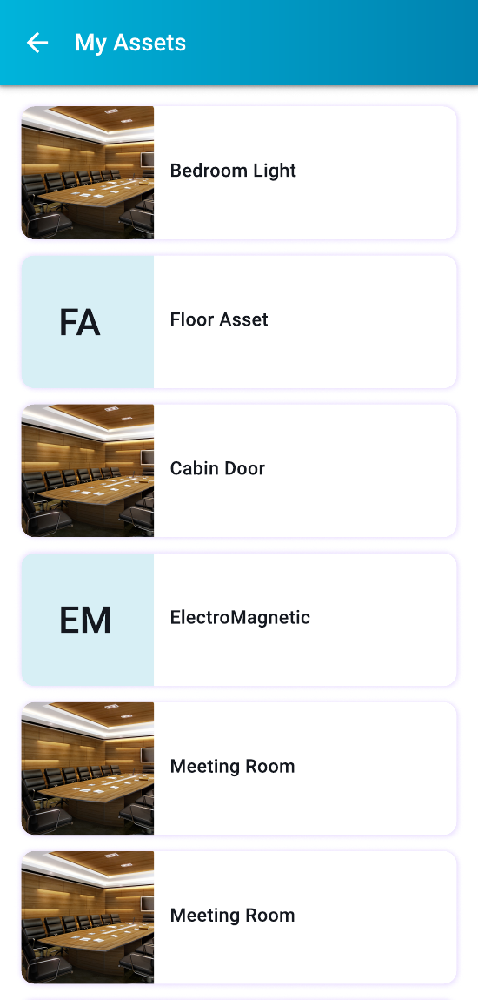
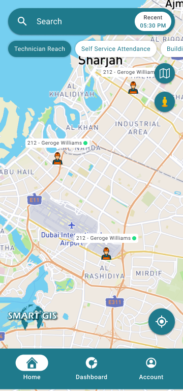

Selected case
studies.
A deep dive into the decisions, heuristics, and design-thinking behind each project — not just the final screens.

Smart Helpdesk — a tenant-first facility management app
Redesigning the end-to-end complaint and service request experience for property tenants. A 3-step guided wizard, real-time tracking, and multi-modal evidence capture — reducing manual input errors by 25%.

Heuristic Evaluation — VisionGuard
A systematic usability audit of an AI-powered video analytics platform using Nielsen's 10 Heuristics, identifying 20+ actionable usability issues across the product interface.

GIS — Location-based Facility Management
Map-centric mobile experience for real-time technician tracking, workforce attendance monitoring, and asset management across multi-building facilities. 87+ screens across 4 modules.

My School Pal — School Management App for Parents
A unified mobile experience giving parents complete visibility into their child's academic life — attendance, exams, homework, timetables, and leave management in one accessible app.